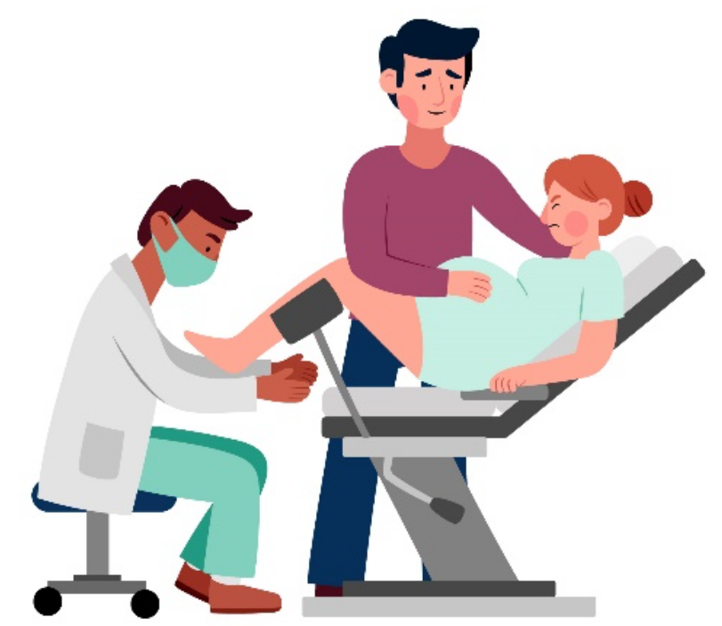
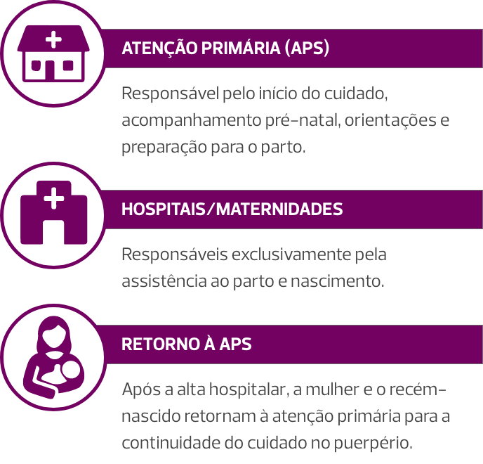

Aula 1
Sepse na gestação e puerpério
Introdução
A sepse é uma disfunção orgânica com risco de vida causada por uma resposta desregulada do hospedeiro à infecção. Nesta aula vamos falar especificamente sobre a sepse materna, que é definida pela Organização Mundial da Saúde (OMS) como sepse durante a gravidez, parto, pós-aborto ou período pós-parto (até 42 dias).
Em pacientes obstétricas a sepse é uma importante questão de saúde. No Brasil, a sepse é a terceira maior causa de mortalidade materna, ficando atrás apenas de doenças hipertensivas e hemorragias em gestantes, parturientes e puérperas.
Antes de 2016 a sepse consistia em várias categorias, incluindo síndrome da resposta imune inflamatória sistêmica (SIRS), sepse e choque séptico. Essa terminologia foi abandonada em favor de sepse e de choque séptico, com ênfase em disfunção orgânica em vez de sintomatologia.
Apesar da conscientização crescente, a proporção de mortes maternas por sepse permanece estável desde a década de 1980 e a prevenção de mortes com reconhecimento imediato, tratamento precoce e escalonado tornou-se cada vez mais importante. Em resposta a essa necessidade emergente, o Colégio Americano de Obstetras e Ginecologistas (ACOG) divulgou recentemente uma Declaração de Consenso por meio da Aliança para Inovação em Saúde Materna (AIM), com foco em um pacote de segurança sobre sepse de causa obstétrica. Esse pacote está organizado em cinco domínios: Prontidão, Reconhecimento e Prevenção, Resposta, Notificação e Aprendizagem Sistêmica, e Cuidado Respeitoso, Equitativo e de Apoio. O domínio Cuidado Respeitoso, Equitativo e de Apoio fornece boas práticas, essenciais ao cuidado de todas as pacientes. Considerações adicionais sobre equidade em saúde são integradas aos elementos de cada domínio.
Fisiopatologia da sepse
Como foi explicado no tópico anterior, a fisiopatologia da sepse é um processo complexo ocasionado por uma resposta imune desregulada, resultando em uma disfunção orgânica com risco de vida, o que torna essa resposta inflamatória uma condição grave de saúde.
Durante uma infecção, o sistema imunológico reconhece um microrganismo como estranho por meio de interações com receptores de reconhecimento que desencadeiam uma cascata inflamatória com a liberação de citocinas e quimiocinas inflamatórias, bem como a ativação do sistema de complemento e dos sistemas imunológicos inato e adaptativo. O endotélio também é ativado, resultando em duas respostas principais:
Resposta 1
As junções comunicantes entre as células endoteliais se alargam para permitir o movimento do plasma e das células inflamatórias para a área na qual a infecção está localizada.
Resposta 2
Os fatores de coagulação são liberados, promovendo a formação de microtrombos sistêmicos, prevenindo a disseminação da infecção.
Esse processo é altamente regulado e produz mediadores anti-inflamatórios, que modulam ainda mais a resposta inflamatória com o objetivo de erradicar o patógeno sem sobrecarregar o hospedeiro. Esses processos levam à destruição de patógenos estranhos, bem como à produção de anticorpos para futura proteção imunológica.
Embora não totalmente compreendidos, existem vários mecanismos propostos a partir dos quais a desregulação da resposta imunológica à infecção resulta em sepse. Um desses mecanismos propostos evidencia que há superativação de receptores de reconhecimento com consequente superprodução de mediadores pró-inflamatórios e anti-inflamatórios e superativação do endotélio. Isso pode resultar em transbordamento de mediadores da infecção localizada para a circulação, levando a efeitos em todo o sistema e envolvimento de órgãos remotos. Além disso, em vez de uma produção localizada de microtrombos, pode haver ativação sistêmica da cascata de coagulação com coagulopatia intravascular disseminada resultante. Finalmente, é proposto que um desequilíbrio nos sistemas nervosos simpático e parassimpático, hormônios e transcrição genética pode desempenhar algum papel no desenvolvimento e progressão da sepse. Ainda não se sabe por que alguns sistemas de órgãos são mais afetados do que outros em pacientes individuais.
Pacientes obstétricas apresentam maior risco de infecção, pois há uma regulação negativa fisiológica do sistema imunológico materno.
Essa regulação negativa normal do sistema imunológico é hipotetizada para conferir uma vantagem evolutiva ao proteger o feto em desenvolvimento e o crescimento da placenta.
Infográfico de desenvolvimento fetal
No entanto, mesmo no período pós-parto, a sepse materna continua sendo uma preocupação crítica. Nos Estados Unidos, um estudo que examinou mais de 66 milhões de nascimentos mostrou que 50% dos casos de sepse materna ocorreram após a alta hospitalar, destacando a necessidade de maior conscientização no período pós-parto.
Choque séptico
O choque séptico é definido como um subconjunto de sepse em que anormalidades circulatórias, celulares e metabólicas profundas estão associadas a uma mortalidade maior do que a sepse. Clinicamente, o choque séptico é identificado por uma hipotensão persistente, definida como a necessidade de vasopressores para manter uma pressão arterial média (PAM) ≥ 65 mm Hg e um nível sérico de lactato > 18 mg/dL [2 mmol/L], a despeito de reposição volêmica adequada.
Em 2016, a Third International Consensus Definitions for Sepsis and Septic Shock Task Force recomendou a adoção dos termos “sepse” e “choque séptico”, juntamente com o uso do sistema de pontuação Sequential Organ Failure Assessment (SOFA) para identificar disfunção orgânica. Um aumento na pontuação SOFA de 2 pontos ou mais representa falência orgânica e está associado a uma mortalidade hospitalar maior que 10%.
Uma maneira rápida de identificar sepse fora da unidade de terapia intensiva, à beira do leito, sem necessidade de exames laboratoriais, o quickSOFA (qSOFA), também foi recomendado como um meio de identificar pacientes adultas com suspeita de infecção com maior risco de sepse. No SOFA modificado para Obstetrícia, os parâmetros avaliados incluem a relação PaO2/ FIO2, plaquetas, bilirrubinas, pressão arterial média, resposta neurológica e creatinina. Já o qSOFA é de cálculo mais prático, sendo também modificado para Obstetrícia. Seus parâmetros são pressão sanguínea sistólica (≥ 90 mmHg = 0 pontos; < 90 mmHg=1 ponto), frequência respiratória (< 25 incursões por minuto=0 pontos; ≥ 25 incursões por minuto=1 ponto) e alteração mental (alerta=0 pontos; não alerta=1 ponto). Escore do qSOFA ≥ 2 também é preditor de morte materna por sepse. Veja nas tabelas a seguir mais informações sobre SOFA e qSOFA.
Transfusão maciça
| Sistema | Parâmetro | Escore 0 | Escore 1 | Escore 2 |
|---|---|---|---|---|
| Respiração | PaO₂/FiO₂ | ≥ 400 | 300 a < 400 | < 300 |
| Coagulação | Plaquetas (x10⁶/L) | ≥ 150 | 100 – 150 | < 100 |
| Fígado | Bilirrubina (µmol/L) | ≤ 20 | 20 – 32 | > 32 |
| Cardiovascular | PAM (mmHg) | ≥ 70 | < 70 |
Vasopressores Necessários |
|
Sistema Nervoso Central |
Estado mental | Alerta | Responsivo à voz |
Responsivo à dor |
| Renal | Creatinina (µmol/L) | ≤ 90 | 90 – 120 | > 120 |
Escore qSOFA Modificado para Obstetrícia
| Parâmetro | Escore 0 | Escore 1 |
|---|---|---|
| Pressão arterial sistólica | ≥ 90 mmHg | < 90 mmHg |
| Frequência respiratória | < 25 respirações/min | 25 respirações/min ou mais |
| Estado mental | Alerta | Não está alerta |
Os principais estudos realizados e protocolos elaborados para abordagem da sepse foram realizados em populações mais idosas e com mais comorbidades do que a população obstétrica. Além disso, mudanças fisiológicas e imunológicas da gravidez podem mascarar sinais iniciais de sepse, já que a gestante é fisiologicamente mais hipotensa, taquicárdica e taquipneica do que o adulto não gravídico. Exames laboratoriais tais como creatinina, gasometria arterial, hemograma etc., também se alteram na gravidez.
Por exemplo, a pontuação SOFA atribui 1 ponto para uma creatinina sérica >1,2 mg/dL, valor acima da faixa normal na gravidez. Da mesma forma, uma PAM < 70 é considerada anormal no SOFA, mas pode ser um valor normal no segundo trimestre de gestação. Sendo assim, é imperativo manter um alto nível de vigilância no diagnóstico e tratamento da infecção materna.
A Society for Maternal-Fetal Medicine recomenda que os clínicos tenham um alto índice de suspeita de sepse em pacientes com disfunção de órgão-alvo inexplicável na presença de infecção ativa. Com base nessa informação, a Sociedade de Obstetrícia da Austrália e Nova Zelândia elaborou um escore de SOFA e qSOFA adaptado para a gravidez, levando em conta essas alterações fisiológicas.
Etiologias comuns da sepse materna
As causas da sepse materna, obstétrica e não obstétrica, geralmente estão relacionadas ao momento da infecção (anteparto, periparto ou pós-parto). As infecções do trato geniturinário são a fonte mais comum de infecção durante os períodos pré-natal e pós-parto, sendo a pielonefrite a causa mais comum de hospitalizações não obstétricas durante a gravidez. A sepse intraparto é mais provavelmente resultado de infecção intra-amniótica, enquanto endomiometrite, mastite, infecções gastrointestinais e de tecidos moles são mais propensas a ocorrer em sepse pós-parto.
Os patógenos mais comuns implicados na sepse materna são:
- Escherichia coli (E. coli).
- Estreptococos do grupo B.
- Staphylococcus aureus.
- Bactérias anaeróbicas.
-
Listeria monocytogenes.
Vale destacar que a E. coli é encontrada em até metade das hemoculturas positivas em pacientes grávidas, sendo a bactéria predominante em casos de urosepse, infecção intra-amniótica e endomiometrite.
Representação 3D de patógenos microscópicos da E. coli
As hemoculturas polimicrobianas são relatadas em até 15% dos casos de sepse. No entanto, até dois terços das hemoculturas e um terço de todas as culturas de pacientes com sepse serão negativas, sem nenhum patógeno causador identificado.
Embora menos comum, o estreptococo do grupo A (GAS) carrega alta taxa de mortalidade quando associado à sepse. Embora a incidência de casos de sepse relacionada ao GAS esteja aumentando globalmente, a incidência nos Estados Unidos permaneceu estável em 3,48 por 100.000 pessoas.
As infecções por GAS são caracterizadas por rápida deterioração clínica, com 75% das pacientes infectadas tendo menos de nove horas entre os primeiros sinais de infecção e o desenvolvimento de choque séptico. Aproximadamente 20% das pacientes com GAS morrem dentro de sete dias do diagnóstico devido à sua natureza rápida e gravidade clínica.
As infecções virais e fúngicas também desempenham papel importante na sepse materna. Vamos ver mais informações sobre cada tipo de infecção?
As causas mais comuns de sepse viral incluem influenza, varicela-zóster e vírus herpes simplex. Os sintomas de apresentação geralmente são pneumonia, mas podem incluir hepatite, encefalite, coagulopatia, síndrome do desconforto respiratório agudo ou choque séptico. Mais recentemente, a covid-19 também foi identificada como causa de sepse materna, com uma taxa de mortalidade de 1,3% para casos graves.
Infecções fúngicas, mais comumente por Candida sp., são extremamente raras na gravidez, mas estão associadas a altas taxas de mortalidade.
Aborto séptico
O aborto séptico pode ser definido como uma infecção intrauterina que ocorre em ≤ 20 semanas de idade gestacional. Ao avaliar uma paciente com suspeita de aborto séptico é importante reconhecer a ocorrência de instrumentação uterina anterior. Outros fatores clínicos que podem conferir um risco aumentado de aborto séptico incluem sangramento uterino prolongado, dispositivo intrauterino retido, acesso inseguro ao aborto e produtos retidos da concepção.
Após suspeita de aborto séptico, deve-se:
- Realizar um exame físico cuidadoso.
- Verificar a sensibilidade abdominal à descompressão brusca (sinal de Blumberg positivo).
- Fazer um exame especular.
-
Avaliar cuidadosamente sinais de trauma cervical e/ou vaginal.
Além dessas recomendações, é indicada a realização de um exame bimanual para avaliar a sensibilidade cervical e/ou uterina à palpação. As investigações laboratoriais devem incluir hemograma completo, lactato sérico, hemoculturas e culturas cervicais, incluindo testes para gonorreia e clamídia, se disponíveis. A ultrassonografia pélvica endovaginal é útil para avaliar a retenção de produtos da concepção, presença de imagens sugestivas de abscesso pélvico etc.
Em pacientes com suspeita de processos infecciosos extensos, tais como infecção pélvica devido à perfuração uterina, deve-se considerar tomografia computadorizada da pelve e do abdômen. Deve-se considerar a administração de imunoglobulina anti-D nas pacientes Rh(D) negativo. Em paciente séptica com evidência de retenção de produtos da concepção, após o início da terapia com fluidos intravenosos e antibióticos, a aspiração uterina é recomendada para controle do foco infeccioso, independentemente da atividade cardíaca fetal.
As bactérias envolvidas nos casos de aborto séptico geralmente surgem da flora vaginal. Anaeróbios devem ser sempre considerados, especialmente em pacientes que apresentam sepse com choque. Embora a maioria dos casos de aborto séptico sejam considerados polimicrobianos, pacientes com infecções por GAS apresentam risco de síndrome do choque tóxico. Em pacientes em que há suspeita de infecção por GAS, a adição de clindamicina à penicilina em altas doses é recomendada para reduzir a liberação de fatores de virulência de GAS.
Infecção intra-amniótica (corioamnionite)
A infecção intra-amniótica (IAI) afeta 4% dos nascimentos, e é a etiologia obstétrica mais comum de infecção periparto em todo o mundo. A IAI, que anteriormente era chamada de corioamnionite, refere-se à infecção que envolve o líquido amniótico, o feto, o cordão umbilical e as membranas.
Clique aqui e saiba mais sobre a mudança do nome dessa infecção e o endosso do ACOG sobre os critérios do Instituto Nacional de Saúde Infantil e Desenvolvimento Humano (NICHD).
A IAI é tipicamente uma infecção polimicrobiana envolvendo flora entérica ou do trato genital inferior que migra para a interface decidual-coriônica com eventual passagem para a cavidade amniótica. A ruptura da membrana não é necessária para infecção da cavidade amniótica, pois a bacteremia materna também pode se desenvolver caso o(s) microrganismo(s) alcancem o espaço interviloso placentário, resultando em infecção transplacentária do feto. O eventual desenvolvimento da infecção é influenciado por uma interação complexa de fatores do hospedeiro local e mecanismos de defesa, bem como pela virulência do(s) organismo(s) patogênico(s).
Em pacientes com diagnóstico de IAI, é essencial manter a vigilância para o desenvolvimento de sepse. A literatura obstétrica descreveu uma probabilidade de oito a doze vezes maior de sepse, com aproximadamente 12% a 20% de sepse materna precedida por IAI. Sendo assim, antibióticos parentais de amplo espectro devem ser administrados prontamente diante desse diagnóstico, na intenção de tratar infecção materna e fetal, reduzindo o risco neonatal de infecção e de morbidades infecciosas maternas e neonatais subsequentes.
Os princípios básicos de manejo, conforme descrito anteriormente, devem orientar a avaliação inicial com coleta de culturas, administração imediata de antibióticos de amplo espectro e resolução do parto independentemente da idade gestacional. O trabalho de parto deve ser monitorizado com vigilância materno-fetal contínua.
A IAI não é uma indicação de cesariana imediata, exceto em alguns cenários clínicos — por exemplo, colo uterino desfavorável e/ou descompensação hemodinâmica materna. Nessas circunstâncias clínicas, que são desafiadoras, deve haver consideração ponderada e individualizada dos benefícios de indicar o parto abdominal em comparação ao fato de que, para pacientes com IAI recebendo antibióticos, a duração do trabalho de parto não está correlacionada com resultados neonatais adversos. Portanto, deve-se considerar os riscos associados a cesarianas, tais como infecção da ferida operatória, abscesso intra-abdominal, endomiometrite e complicações tromboembólicas.
A duração ideal da antibioticoterapia parenteral pós-parto na ausência de sepse materna não foi determinada conclusivamente, e não há evidências de que antibióticos orais sejam benéficos após a descontinuação da terapia parenteral. Alguns especialistas preconizam dose única adicional ou curso de 24 horas de antibióticos parenterais no pós-operatório imediato de cesarianas, considerando o risco aumentado de morbidade infecciosa em pacientes com IAI submetidas a cesárea. Independentemente da via de parto, é razoável continuar os antibióticos após o parto quando houver quaisquer preocupações ou sinais e/ ou sintomas sugestivos de sepse evidenciados no intraparto ou no pós-parto imediato.
Endomiometrite
A endomiometrite pós-parto é uma infecção da decídua ou do miométrio, que ocorre em 1% a 3% dos partos vaginais e em até 27% das cesáreas. A endomiometrite é tipicamente polimicrobiana, envolvendo bactérias aeróbicas e anaeróbicas do trato genital inferior. Similarmente ao mecanismo patogênico da IAI, a endomiometrite ocorre provavelmente devido à migração da flora endógena do trato genital inferior para a cavidade uterina durante o parto e o nascimento, com desenvolvimento subsequente de infecção relacionada a uma interação complexa de fatores locais, mecanismos de defesa do hospedeiro e virulência.
O diagnóstico de endomiometrite pós-parto é eminentemente clínico, com suporte de um ou mais dos seguintes sinais e/ou sintomas:
- Sensibilidade uterina.
- Corrimento ou odor vaginal anormal.
-
Atraso na involução uterina.
Evidências laboratoriais, tais como contagem elevada de glóbulos brancos ou lactato sérico, são frequentemente utilizadas para suportar o diagnóstico e monitorar a progressão da infecção. Culturas e antibiogramas de sangue, ferida e/ou lóquios uterinos são úteis para direcionar os regimes de tratamento com antibióticos.
Para paciente grave por endomiometrite pós-parto deve ser considerada a realização de estudos de imagem (ultrassonografia pélvica e/ou tomografia computadorizada), na intenção de investigar diagnósticos alternativos, tais como material ovular retido, abscesso pélvico ou tromboflebite pélvica séptica.
Infecção de ferida perineal
Lacerações vaginais são comuns no momento do parto, com 53% a 79% das pacientes apresentando qualquer tipo de laceração. Acredita-se que a incidência de lesões obstétricas do esfíncter anal (OASIS) seja tão alta quanto 11% após o parto vaginal de pacientes nulíparas, conferindo um risco infeccioso significativo.
Um ensaio clínico randomizado demonstrou uma taxa reduzida de complicações de feridas pós-parto duas semanas após o parto em pacientes que receberam dose única de cefalosporina de segunda geração em comparação com placebo (8% vs. 24%, p = 0,04). O ACOG considera razoável administrar dose única de antibiótico no momento do reparo de uma lesão obstétrica do esfíncter anal.
O reconhecimento rápido da sepse secundária à infecção da ferida perineal é essencial para a otimização dos resultados em pacientes com infecções profundas ou fasceíte necrotizante. O primeiro passo no tratamento da sepse secundária à infecção da ferida perineal continua sendo terapia precoce com antibióticos de amplo espectro, cuidadosamente selecionados para cobertura das floras dos sistemas geniturinário e gastrointestinal. Além disso, deve-se considerar a necessidade de exploração cirúrgica e desbridamento, como adjuvantes no controle do foco. A intervenção cirúrgica urgente é imperativa em casos de sepse secundária à fasceíte necrotizante, pois o desbridamento precoce está associado à redução da mortalidade materna.
Mastite
A mastite puerperal (lactacional) é um diagnóstico pós-parto relativamente comum. Felizmente, a sepse secundária à mastite lactacional parece ser uma ocorrência rara, pois existem poucos relatos de casos na literatura. Essas pacientes geralmente apresentam queixas mamárias específicas, como eritema, calor local e dor.
Surgindo os sintomas citados, é recomendado um exame físico completo das mamas, com investigação cuidadosa de abscessos mamários, e a terapia antimicrobiana deve ser iniciada imediatamente. Na presença de abscessos, o início da antibioticoterapia deve ser seguido de incisão e drenagem mamária, objetivando o controle rápido do foco infeccioso. Culturas de secreção da ferida também devem ser coletadas, intencionando direcionar o uso dos antibióticos. Além disso, recomenda-se amamentação contínua ou ordenha do leite, pois sua interrupção pode resultar em estagnação do leite e maior risco infeccioso.
Lactante realizando ordenha do leite

Sepse não obstétrica
Na abordagem da paciente séptica, o obstetra também deve considerar as fontes não obstétricas de sepse. A fonte não obstétrica mais comum de sepse na paciente anteparto é a pielonefrite. Outras fontes comuns incluem infecções respiratórias e gastrointestinais, tais como pneumonia e apendicite.
Devido à maior morbidade dessas infecções na gravidez, a terapia precoce direcionada a objetivos com administração imediata de antibióticos é essencial em pacientes com fontes não obstétricas de sepse. A consulta apropriada de outras especialidades também deve ser considerada para etiologias não obstétricas de sepse, tais como cirurgia geral em casos suspeitos de apendicite e de colangite e urologia em casos de nefrolitíase infectada.
Sistemas de alerta precoce em Obstetrícia
Para melhorar a identificação precoce de pacientes com instabilidade hemodinâmica e/ou deterioração clínica, vários sistemas de alerta precoce com pontuação foram desenvolvidos para obstetrícia. Cada um desses sistemas de pontuação tem limitações e não há um sistema preferencial, pois a maioria deles permanece não validada e não parece superar as ferramentas não obstétricas. Esses sistemas de pontuação incluem o Modified Early Obstetric Warning System (MEOWS), o Maternal Early Warning Criteria (MEWC) e o Maternal Early Warning Trigger (MEWT). Os critérios utilizados não são específicos para sepse e podem levar à detecção de hemorragia não reconhecida, gravidez ectópica rota, tromboembolismo, pré-eclâmpsia e complicações cardiovasculares.
O qSOFA e o SOFA, citados anteriormente nesta aula, são ferramentas utilizadas para rápida identificação de sepse em pacientes não obstétricas com maior risco de resultados adversos. No entanto, esses sistemas de pontuação ainda não foram validados para uso na população obstétrica e, conforme discutido, apresentam armadilhas quando usados nessa população, requerendo adaptações.
Embora a ferramenta ideal para identificar sepse materna e prever mortalidade permaneça incerta, o AIM recomenda a padronização pela implementação de uma das ferramentas de triagem para identificação e avaliação precoces de pacientes obstétricas com infecção e manutenção da vigilância durante avaliações subsequentes.
Sepse obstétrica e princípios básicos do manejo
Em 2004, a Surviving Sepsis Campaign delineou os princípios de manejo para sepse e teve uma revisão mais recente em 2021. A estrutura subjacente para o manejo adequado é:
- Identificação precoce da sepse.
- Obtenção de exames laboratoriais pertinentes, como hemoculturas e níveis de lactato.
- Administração de fluidos intravenosos e/ou vasopressores.
-
Início imediato de antibióticos.
A identificação precoce da sepse e o tratamento com antibióticos são o ponto essencial para melhorar os resultados de pacientes com sepse.
Veja esses números relacionados à população não obstétrica, que reforçam a importância da identificação precoce da sepse:
O início dos antibióticos dentro da primeira hora do diagnóstico está associado a uma taxa de sobrevida de 79,9%.

Cada hora de atraso nos antibióticos reduz a sobrevida em 7,6%.
Embora os estudos iniciais sobre a hora de ouro do tratamento da sepse tenham excluído pacientes grávidas, outros estudos demonstraram resultados semelhantes na população obstétrica.
A avaliação inicial à beira do leito de pacientes grávidas deve incluir:


Se o feto for viável, a avaliação da vitalidade fetal também deve ser realizada. A gestante possui um monitor único de perfusão orgânica chamado feto. A sepse materna, com ou sem instabilidade hemodinâmica, pode se apresentar com estado fetal não tranquilizador, já que a circulação uteroplacentária não é autorregulada.
Se a paciente for considerada instável por meio de sinais vitais (PAM < 65 mm Hg, frequência respiratória> 25 respirações/minuto ou falta de ar, frequência cardíaca anormal, alterações do estado mental ou alterações da cor ou aparência da pele) ou pela avaliação do provedor, deve-se iniciar uma rápida escalada do atendimento. Em muitas instituições isso pode ser feito por meio de uma equipe de resposta rápida, porém, mesmo na ausência dessas equipes, a escalada do atendimento não deve ser adiada.
Após a avaliação inicial e diante da suspeita de sepse, essas pacientes devem realizar alguns exames básicos:
- Hemograma completo.
- Lactato sérico.
-
Hemoculturas.
Exames laboratoriais adicionais podem fornecer informações clínicas relevantes, tais como:
- Cultura de urina.
- Exames da função renal e hepática (creatinina, bilirrubinas).
- Fatores de coagulação.
- Gasometria arterial.
-
Teste viral.
Antibióticos de amplo espectro que cobrem patógenos comumente implicados devem ser administrados com o plano para personalizar o tratamento quando um diagnóstico definitivo for feito ou o patógeno causador for identificado.
Conforme já mencionado anteriormente, é importante não atrasar o início dos antibióticos por mais de uma hora se as culturas não puderem ser coletadas, e as culturas ainda são recomendadas após o início dos antibióticos.
Em pacientes com choque séptico refratário às medidas usuais de tratamento, a administração intravenosa de imunoglobulina deve ser considerada, porque pode reduzir a mortalidade geral na população adulta.
Sepse obstétrica e monitoramento hemodinâmico
De acordo com as diretrizes da “Campanha Sobrevivendo à Sepse 2021”, da Society of Critical Care Medicine, um acesso arterial deve ser obtido “assim que possível e se houver recursos disponíveis”.
Profissional de saúde obtendo acesso venoso para ressuscitação de fluidos
Vale lembrar que, devido às diferentes práticas e recursos locais, as decisões sobre o uso de monitoramento hemodinâmico invasivo devem ser individualizadas e de acordo com as principais diretrizes de consenso.
Sepse obstétrica e ressuscitação de fluidos
Para pacientes com lactato sérico > 4 mmol/L ou PAM < 65 mm Hg, a ressuscitação de fluidos também deve ser iniciada prontamente para garantir a perfusão tecidual adequada necessária para a função adequada dos órgãos. Para a paciente obstétrica, a ressuscitação de fluidos precoce é ainda mais crítica para a otimização da função cardíaca e da perfusão útero-placentária.
A taxa inicial de infusão para pacientes não grávidas com sepse é de 30 mL/kg, seguida de fluidos adicionais conforme indicado clinicamente. A gestante, devido à hipervolemia fisiológica, apresenta risco maior de congestão pulmonar e por isso é recomendado começar com um bolus de 1 a 2 L de uma solução balanceada (ringer lactato) para a ressuscitação inicial de fluidos ou 20 mL/Kg. Soluções desbalanceadas, como soro fisiológico e albumina, devem ser evitadas (exceto em algumas situações clínicas específicas), pois estão associadas a vários efeitos nocivos, incluindo:
- Vasoconstrição da artéria renal.
- Acidose metabólica hiperclorêmica.
- Hipotensão.
- Choque refratário (não responsivo a vasopressores).
- Disfunção de órgão-alvo.
-
Lesão renal aguda.
Os esforços contínuos de ressuscitação de fluidos devem ser guiados pelo estado hemodinâmico e pela depuração de lactato. Embora faltem estudos rigorosos avaliando a utilidade dos níveis de lactato no tratamento da sepse materna, as evidências disponíveis sugerem utilidade semelhante em comparação com pacientes não grávidas.
Sepse obstétrica, choque séptico e vasopressores
Após os esforços iniciais de ressuscitação com fluidos ou no momento do diagnóstico de choque séptico, os vasopressores devem ser iniciados para manter a PAM ≥ 65 mmHg.
Em população obstétrica, a norepinefrina é recomendada como um agente vasopressor de primeira linha, e, para casos em que terapia adicional é necessária, a vasopressina é recomendada como segunda opção. Nos casos em que a disfunção cardíaca for identificada, a administração de um vasopressor que forneça suporte inotrópico, como dobutamina ou epinefrina, está recomendada.
Cardiomiopatia induzida por sepse
A associação fisiopatológica entre sepse e disfunção cardíaca é bem descrita na literatura de cuidados intensivos. No cuidado de pacientes com sepse materna, é vital manter maior conscientização sobre a possibilidade de cardiomiopatia induzida por sepse e considerar o uso de ecocardiografia não invasiva (ecocardiografia transtorácica) para avaliação.
Em casos refratários à terapia vasopressora e ressuscitação volêmica adequada, deve haver esforços acelerados para investigar a possibilidade de disfunção cardíaca para direcionar o manejo posterior.
Pacotes de cuidados
O “pacote de cuidados” é um conceito no qual várias intervenções baseadas em evidências são agrupadas em um protocolo de cuidados. A implementação de pacotes de cuidados mostrou reduções em erros e melhorias marcantes em resultados de pacientes gravemente enfermos.
Recentemente, o AIM publicou um pacote de segurança de consenso sobre sepse em cuidados obstétricos, fornecendo orientações para o desenvolvimento de um programa de cuidados padronizado, coordenado e multidisciplinar para pacientes grávidas e pós-parto. Esse pacote fornece um método para avaliação sistemática e um plano de prática clínica padrão que se concentra na prevenção de infecções e no reconhecimento e tratamento precoces de infecções para evitar a progressão para sepse.
Cuidados pós-UTI
A admissão na unidade de terapia intensiva (UTI) é estressante para a paciente e seus familiares. Estudos demonstraram que a qualidade de vida é impactada após a admissão na UTI e que pacientes em recuperação de doenças críticas apresentam risco de desenvolver transtorno de estresse pós-traumático.
Profissional de saúde verificando sinais vitais em UTI

Recentemente, tem havido uma conscientização crescente sobre a síndrome de cuidados pós-intensivos (PICS), uma condição que abrange os comprometimentos físicos, cognitivos e mentais que persistem após a alta da UTI.
Sobreviventes de doenças críticas, em particular aqueles que desenvolvem PICS, correm o risco de desenvolver incapacidades permanentes, sofrimento prolongado e, consequentemente, utilização crônica e de alto nível de recursos de assistência médica.
Além das condições gerais de PICS, resultados adversos de longo prazo relacionados à gravidez podem incluir incontinência urinária e anal, função sexual alterada e condições de saúde mental relacionadas à perda perinatal e/ou morbidade neonatal significativa. É importante manter a conscientização desses resultados adversos após a admissão na UTI obstétrica e providenciar acompanhamento e suporte adequados para a paciente e seus familiares.
A avaliação de intervenções não farmacológicas, incluindo mobilização precoce e reabilitação física, diários, intervenções psicológicas e programas multidisciplinares pós-UTI, ainda está em fases iniciais de desenvolvimento e pesquisa. Embora estudos preliminares tenham descrito essas intervenções como úteis para a recuperação física e psicológica, investigações adicionais são necessárias para entender melhor as patologias do PICS e intervenções eficazes que possam melhorar os resultados das pacientes.
Embora ainda haja escassez de evidências de alto nível sobre o impacto das intervenções no desenvolvimento e nos resultados de longo prazo do PICS, as unidades obstétricas devem considerar o desenvolvimento e a implementação de um programa robusto de triagem e acompanhamento para pacientes periparto gravemente doentes. Uma abordagem padronizada de equipe multidisciplinar para o cuidado imediato e de longo prazo de pacientes gravemente doentes deve idealmente incluir cuidadores que estejam pessoalmente envolvidos e aqueles com conhecimento especializado em todos os domínios envolvidos (por exemplo, saúde mental, suporte ao luto, intensivistas e subespecialistas apropriados).
Uma vez que ocorra alta da UTI, os sistemas de alerta precoce devem continuar na vigilância dessas pacientes. Se a deterioração for diagnosticada ou suspeitada, isso deve ser comunicado de forma expedita à equipe da UTI e/ou equipe multidisciplinar pós-UTI para garantir que essas pacientes recebam tratamento adequado e oportuno.
Fim da aula
Nesta aula você revisou as definições de sepse e de choque séptico, e identificou os principais fatores de risco e etiologias de infecções graves na gestação e no puerpério. Também foram revisadas as manifestações da sepse gestacional/puerperal, assim como as principais estratégias para o seu reconhecimento precoce. O manejo inicial da sepse gestacional foi delineado, assim como ressuscitação volêmica e controle de foco infeccioso (antibioticoterapia). Foram também apresentados e revisados o pacote de cuidados, as demais terapias de suporte e os cuidados após a terapia intensiva.
Você concluiu esta aula, continue se empenhando nos seus estudos. Siga para a próxima aula!